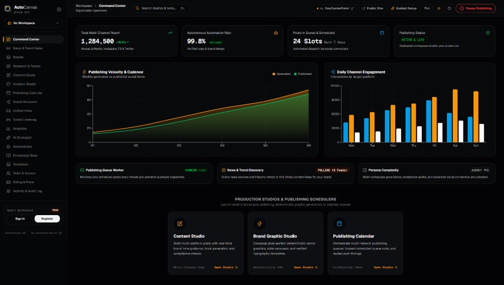

AUTOCANVAS OS v2.0 • LIVE PARITY
INTRODUCING AUTOCANVAS
Meet AutoCanvas.
One intelligent workspace.
Your entire social media operation unified into a single deterministic, enterprise-grade brand OS.
✓
Unified Command Center for all channels
✓
Deterministic engine with zero hallucinations
✓
Engineered from the ground up by DevCenterPoint
autocanvas.devcenterpoint.com/workspace/command-center
